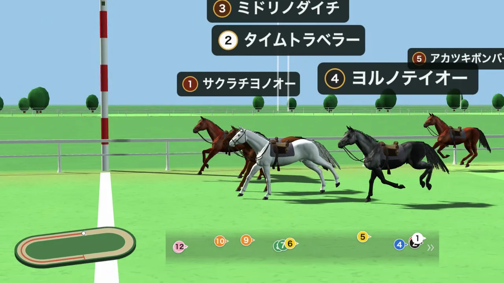
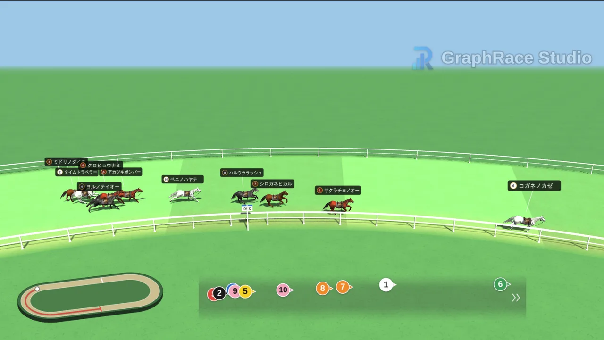

競馬シミュレーター「格付けダービー」｜自分だけのレースを実況中継風に

架空の馬で重賞を組んでみたい。予想した着順が、実際のレースならどんな展開になるのか見てみたい。そんな「もしも」のレースを、ブラウザだけで3DCGの競馬中継として再現できるのが、競馬シミュレーター「格付けダービー」です。
使い方はシンプルで、出走馬と着順を決めてスタートを押すだけです。道中の位置取りや仕掛けどころはツールが毎回シミュレーションし、ゴールは必ず指定した着順で決着します。登録もインストールも不要で、現時点では無料で使えます。
- 本物に近い3DCGの馬：実在の毛色4種と、実際の競走馬に近い約17m/sの走行速度
- 実際の競馬場に近いコース：469m・1000m・2400mの実測コースと、右回り／左回り
- 脚質を馬ごとに指定できる：大逃げ・逃げ・先行・差し・追込から選べる
- 展開はほぼ無限：展開シードの数字を変えるたびに、まったく違うレースになる
格付けダービーは着順を自分で決めて、そこに至るレースを映像で再現するシミュレーターです。実在の馬のデータから勝ち馬を予測するツールではないため、馬券の予想には使えません。予想ツールや育成ゲームを探している方は、次の章の「5つのタイプ」を参考にしてください。
この記事では、ツールを開発している立場から、格付けダービーがどんな仕組みでレースをシミュレーションしているのかを、ほかの競馬シミュレーターとの違いも含めて解説します。
競馬シミュレーターとは？目的別の5タイプ
「競馬シミュレーター」と一口に言っても、指しているものは人によってかなり違います。実際に検索してみると、育成ゲームから予想ソフト、乗馬クラブの騎乗マシンまでが同じ言葉で呼ばれています。目的別に整理すると、おおむね次の5タイプに分かれます。
| タイプ | 何をシミュレーションするか | 主な形態 | 代表的な例 |
|---|---|---|---|
| 育成・経営ゲーム | 馬主や調教師として馬を育て、レースで勝たせる | スマホアプリ、PCゲーム、ブラウザゲーム | ダービースタリオン、ウイニングポスト、競馬伝説PRIDE |
| 観戦・馬券ゲーム | ランダムに決まるレースを観て、馬券の当たり外れを楽しむ | ブラウザゲーム、フリーゲーム | スターホースポケット+、unityroomなどのフリーゲーム |
| レース映像シミュレーター | 自分で決めた条件でレースを走らせ、映像として観る・残す | ブラウザツール | 格付けダービー、競馬の庭「カスタムレース」 |
| 予想・馬券シミュレーター | 過去データから勝率や展開を予測する、買い目や回収率を試算する | 予想サイト、分析ソフト | netkeibaのAI予想、JRA-VAN Data Lab.対応ソフト |
| 騎乗シミュレーター | 騎手の騎乗動作を体験する | 乗馬クラブや施設の騎乗マシン | Racewood社の競馬シミュレーター（乗馬クラブで体験可） |
横にスクロールできます
格付けダービーは3つ目の「レース映像シミュレーター」です。馬を育てたり、実際のレースを予想したりする機能はありません。そのかわり、「この着順で決着するなら、道中はどう流れるか」を、競馬中継そのものの画で見せることに特化しています。
馬を育てたいなら育成ゲーム、実際のレースの予想をしたいならデータ分析系の予想サイトやソフトのほうが目的に合います。以下は、自分で思い描いたレースを映像にしたい方に向けた内容です。
格付けダービーはどんな競馬シミュレーター？
格付けダービーには、2つの表現モードがあります。軽快な2Dの「競馬風」と、3DCGの馬が競馬場のようなコースを走る「リアル競馬風」です。出走馬の設定は共通で、ツール上部のボタンで切り替えられます。
| モード | 特徴 | シミュレーターとしての向き不向き |
|---|---|---|
| 競馬風（2D） | 真横からの固定カメラ。軽く、スマホでも安定して動く | 手軽な結果発表向け。脚質やコースの指定はできない |
| リアル競馬風（3D） | 3DCGの馬と実測コース。カメラは中継風に自動で切り替わる | レースの再現に向いている。脚質・コース・回り・展開シードを指定できる |
競馬シミュレーターとして本領を発揮するのは「リアル競馬風」のほうです。この記事でも、以降は3Dモードを前提に説明します。2Dモードの使い方は格付けダービーの使い方ガイドで詳しく解説しています。
格付けダービーの4つの独自性
ここからは、格付けダービーがほかの競馬シミュレーターと違う点を4つ紹介します。どれも「本物の競馬中継に見えるかどうか」を基準に、開発の過程で何度も作り直してきた部分です。
1. 本物に近い3DCGの馬
競馬シミュレーターの印象を最も大きく左右するのは、馬そのものの見た目です。格付けダービーの3Dモードでは、ギャロップ（全力の走り）のモーションを持った3DCGの馬が走ります。走りの動きに、首の振りや尻尾の揺れを重ねているので、隊列の中でも一頭一頭が生きて見えるように作っています。
毛色は、実在の鹿毛・芦毛・青鹿毛・青毛の4種類のテクスチャから選べます。頭数が多くて見分けにくいときは、白い毛並みに好きな色を乗せる「カラー」に切り替えることもできます。
走る速さにもこだわりました。開発の初期は、動画を短くするために実際よりずっと速く走らせていました。しかし、それでは脚の運びと進む距離が合わず、どうしても「滑っている」ように見えてしまいます。そこで、実際の競走馬の平均的な速度に近い約17m/s（時速約60km）に固定し、動画の長さはコースの距離で決まる仕組みに改めました。
2. 実際の競馬場に近いコース設定
コースは、実際の競馬場の設計を参考にした3種類から選びます。距離と速度が実測ベースなので、コースを選べば動画の長さも自然に決まります。
| コース | 距離 | 動画の長さ | レースの構成 |
|---|---|---|---|
| ショート | 469m | 約30秒 | 向正面スタート→コーナー→最終直線のワンターン |
| 小回り | 1000m | 約61秒 | 1周1000mのコースをちょうど1周 |
| 広い | 2400m | 約2分27秒 | 長い直線を持つ大きなコース。クラシック距離の本格的なレース |
見た目のリアルさのために、細かい部分も実際の競馬場に合わせています。
- スタート後の助走区間：どのコースもゲートの先に直線を設け、いきなりコーナーに入らないようにしています
- ゴール板の先の直線：決勝線を過ぎた馬がすぐカーブに入って傾いて見えないよう、ゴール後にも直線を残しています
- 右回り・左回り：切り替えるとコースもカメラワークも左右反転します
- 最大16頭のゲート：フルゲートの16頭が並べるコース幅を確保しています
カメラワークは、JRAの中継映像を参考に組んでいます。スタートの全景、コーナーの俯瞰、向正面の分割画面、最終直線、そしてゴールの真横と、実際の中継と同じ順番で自動的に切り替わります。左下のコースマップと中央下の隊列パネルも、中継でおなじみの画面表示を再現したものです。

3. 逃げ・先行・差し・追込を馬ごとに指定できる
格付けダービーでは、出走馬それぞれに脚質を設定できます。脚質は道中の位置取りを決める設定で、次の5種類から選びます。「自動」にすると抽選で決まります。
| 脚質 | 道中の位置取り |
|---|---|
| 大逃げ | スタートから飛ばし、2番手以下を大きく引き離す（出走できるのは1頭まで） |
| 逃げ | 先頭に立ってレースを引っ張る |
| 先行 | 逃げ馬のすぐ後ろ、好位で運ぶ |
| 差し | 中団で脚をためて、直線で伸びる |
| 追込 | 後方に控え、最後の直線で一気に追い上げる |
脚質を指定できるのは、競馬シミュレーターとしてかなり大きな意味があります。同じ「1着」でも、逃げ切りなのか、最後方からの大外一気なのかで、レースの物語がまったく変わるからです。好きな馬の勝ちパターンを再現したり、「もしあの馬が逃げていたら」を試したりできます。
隊列の形にもこだわっています。実際の中継を見ると、序盤は各馬が密集していて、中盤にかけて先頭から最後尾まで40〜60mほどの縦長の隊列になっていきます。格付けダービーでもこの変化を再現していて、脚質ごとの塊が間隔を空けて連なるように動きます。
展開のつけ方は、2つのモードから選べます。
- リアル：各馬が脚質どおりの役割を最後まで貫きます。道中で位置取りが大きく変わる馬は全体の1〜2割程度に抑えていて、実際のレースに近い淡々とした流れになります
- 波乱：直線での叩き合いや見せ場を意図的に作ります。動画として盛り上げたいときに向いています
実際のレースを再現したいときは、展開を「リアル」にし、各馬の脚質を実際の戦法に合わせてください。これだけで「あのレースっぽさ」がかなり出ます。
4. 展開はほぼ無限。展開シードで毎回ちがうレース
格付けダービーのレースは、展開シードという数字から組み立てられます。シードの数字を変えると、ゲートの出方、位置取りの争い、仕掛けのタイミングが変わり、道中はまったく別のレースになります。
シードの数字に、脚質の組み合わせ、頭数、コース、回り、展開モードが掛け合わさるので、レースのパターンは事実上無限です。数字を1つ変えるだけで新しい展開が生まれ、同じ条件でも二度と同じレースにはなりません。
その一方で、次の2つは必ず守られます。
- 同じ数字なら、何度走らせても同じレースになる。気に入った展開は数字を控えておけば再現できます
- ゴールの着順は、どのシードでも必ず指定どおり。変わるのは結果ではなく、そこに至る過程だけです
「着順は決めてあるのに、どう決着するかは走らせてみるまで分からない」。これが格付けダービーをシミュレーターとして遊ぶときの一番の面白さです。展開が気に入るまで、何度でもシードを変えて走らせてみてください。
こんな「もしも」をシミュレーションできる
架空の馬でオリジナル重賞を開催する
馬名、枠番、毛色、脚質、レース名をすべて自由に決められます。自分で考えた架空の競走馬を並べて、オリジナルの重賞レースを開催できます。レース名は画面と結果掲示板に表示され、着差も「ハナ」「クビ」「1馬身」と競馬の表記で出ます。
予想した着順を、映像で観てみる
次のレースの予想が決まったら、その着順を入力して走らせてみるのも面白い使い方です。各馬の脚質を実際の戦法に合わせれば、自分の予想がどんな展開で決着するのかを中継風に確かめられます。あくまで予想を楽しむための使い方で、的中率を上げる機能ではない点はご注意ください。
推し対決やランキング発表を競馬で演出する
馬名の欄には、競走馬以外の名前も入れられます。推しキャラ対決や人気投票の結果発表を競馬中継にすると、1位が分かる瞬間まで目が離せない動画になります。演出の選び方は順位発表動画の作り方で詳しく紹介しています。
配信やイベントの余興にする
ライブ配信の企画や、社内イベント・オフ会の表彰にも使えます。2400mの「広い」コースなら約2分半の本格的なレースになるので、会場の全員でゴールまで見守る演出に向いています。
3ステップで試してみる
- 出走馬と着順を決める馬名を入れ、上から最終着順になるようドラッグで並べ替えます。3Dモードでは脚質と毛色もここで選びます。
- コースと展開を選ぶコース、回り、展開（リアル／波乱）、展開シードを設定します。
- レースを走らせる「レース開始」でシミュレーションが始まります。気に入った展開は「録画してWebM保存」で動画として残せます。
各設定項目の意味や、動画をきれいに仕上げるコツは格付けダービーの使い方ガイドで画面付きで解説しています。
できないこと・注意点
- 着順・脚質・枠番・毛色を指定したレースの再現
- 展開シードによる無数の展開パターン
- 中継風の自動カメラと、着差付きの結果掲示板
- WebM形式での動画保存
- 実際のレースの勝ち馬予想や、馬券の試算
- カメラアングルの手動操作
- 芝・ダートの切り替えや、距離の自由入力
- 3Dの馬へのアイコン画像の貼り付け
- BGM・実況音声の書き出し
- 実在の競走馬名やレース名を使う場合、公式の映像やデータと誤解されない表現にしてください
- 動画を公開するときは、動画内か概要欄に「GraphRace Studio」のクレジット表記をお願いしています
- 格付けダービーは現時点では無料でご利用いただけますが、今後、機能の変更や料金制度の変更を行う可能性があります
- 3Dモードは端末の性能によって動作が重くなることがあります。録画中はタブを切り替えないでください
よくある質問（FAQ）
この競馬シミュレーターは無料で使えますか？
無料で使えます。会員登録もインストールも不要で、ブラウザでページを開けばすぐに使えます。作った動画は商用利用もできますが、公開するときは動画内か概要欄でのクレジット表記にご協力をお願いしています。なお、今後、機能の変更や料金制度の変更を行う可能性があります。
スマホでも使えますか？
使えます。ただし3Dの「リアル競馬風」はリアルタイムで3D描画を行うため、端末によっては動作が重くなります。初回のみ馬のCGモデルなど約4MBのデータを読み込みます。
実際のレースの予想に使えますか？
使えません。格付けダービーは、着順を自分で決めて、そこに至る展開を映像で再現するシミュレーターです。実在の馬のデータから勝ち馬を予測する機能はありません。自分の予想した着順を映像で確かめる、といった楽しみ方はできます。
同じレースをもう一度再現できますか？
できます。「展開シード」の数字と、出走馬・脚質・コースなどの設定が同じなら、何度走らせても同じレースになります。数字を変えると、着順はそのままで道中の展開だけが変わります。
脚質は自動で決めることもできますか？
できます。脚質を「自動」にすると抽選で決まります。大逃げは自動で選ばれても1頭までです。一部の馬だけ脚質を指定し、残りを自動にすることもできます。
動画はどの形式で保存されますか？
WebM形式で保存されます。「録画してWebM保存」を押すとレース開始と同時に録画が始まり、結果掲示板まで終わると自動でダウンロードされます。MP4が必要な場合は、動画編集ソフトや変換ツールで書き出し直してください。
何頭まで走らせられますか？
2頭から16頭まで設定できます。フルゲートの16頭でもゲートに収まるよう、コース幅を確保しています。見やすさを優先するなら8〜10頭がおすすめです。
まとめ
- 格付けダービーは、着順を決めて、そこに至るレースを3DCGの中継風映像で再現する競馬シミュレーター
- 本物に近い3Dの馬、実測ベースのコース、馬ごとの脚質指定で、実際の競馬に近いレース運びになる
- 展開シードで展開はほぼ無限。同じ数字なら再現でき、着順はいつも指定どおり
競馬の面白さは、結果そのものより、ゲートが開いてからゴールまでの2分間にあると思っています。格付けダービーは、その2分間を自分の手で組み立てるためのツールです。まずは初期設定のまま「リアル競馬風」で一度走らせて、シードの数字を変えながら展開の違いを楽しんでみてください。